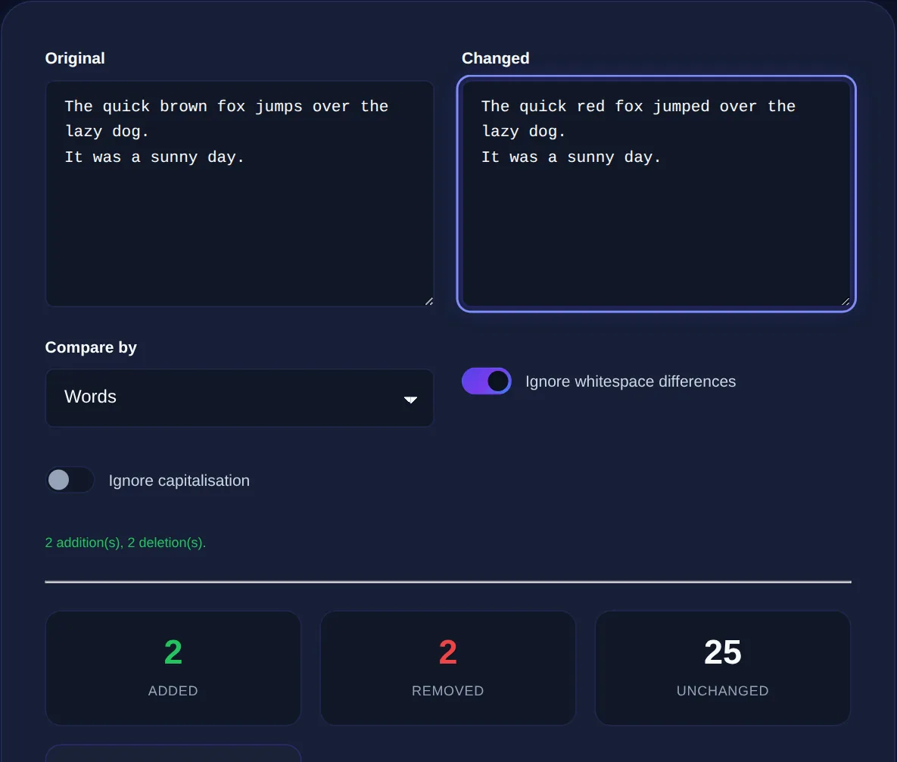

How to Compare Two Texts and Spot Every Difference
Why eyeballing two versions fails, how a diff tool highlights every change, and the everyday jobs it makes trivial.
By Mubasher Hussain · Published 2026-07-31 · Updated 2026-09-01 · 1090 words · about 5 minute read
When you have two versions of the same text, a contract before and after edits, two exports of a config file, a draft and a colleague's revision, the question is always the same: what exactly changed? Reading both side by side and trusting your eyes works for a sentence, but it fails badly for anything longer, because the brain quietly smooths over small differences. A diff tool removes the guesswork by highlighting every addition, deletion and change.
This article explains how text comparison works, why it beats manual checking, and the common situations where a Text Diff Checker turns a frustrating hunt into a two-second answer. As with all our tools, the comparison happens in your browser, so neither version is uploaded anywhere.
Why the human eye is bad at spotting differences
Proofreading two near-identical blocks is exactly the kind of task humans are worst at. A single changed digit, a swapped word, a trailing space or a straight quote turned into a curly one can hide in plain sight. The effect gets worse the longer the text and the more similar the two versions are, because your attention drops precisely when the differences become subtle. This is not carelessness, it is how visual attention works.
A diff tool does not get tired or complacent. It compares the two inputs character by character or line by line and marks every point where they diverge, so you see the changes instead of hoping to notice them.

How a diff highlights changes
Most diff tools work at the line level by default, classifying each line as unchanged, added, removed or modified. Added lines are typically shown in green, removed lines in red, and the surrounding unchanged lines are kept for context so you can see where each change sits. Some tools also do a finer, word-level or character-level diff within a changed line, so instead of just "this line changed" you see exactly which word was swapped.
- Green / added: text present in the second version but not the first
- Red / removed: text present in the first version but not the second
- Changed: a line that exists in both but differs, often shown as a removal plus an addition
- Unchanged: identical lines, kept for context
Many "why won't this work" bugs come from invisible differences: a tab replaced by spaces, a trailing space, or Windows vs Unix line endings. A good diff tool surfaces these, which is exactly why they are so useful for debugging config and code.
Everyday jobs a diff tool makes trivial
Text comparison is not just for programmers. It quietly solves a surprising range of everyday problems:
- Checking what a colleague changed in a shared document before you accept it
- Confirming that a copied block of text really is identical to the original
- Finding the one line that differs between a working and a broken configuration file
- Spotting an unauthorised edit in terms, a quote or a contract
- Comparing two lists to see which entries were added or dropped
For that last case, comparing lists, it often helps to clean both inputs first. Running each list through a tool that removes duplicate lines and sorts them makes the diff far easier to read, because you are comparing like with like.
Comparing structured text and code
Diffing shines with structured formats like JSON, CSV and source code, where a single misplaced comma or bracket breaks everything. If you are comparing two JSON files, format both with a JSON formatter first so they use consistent indentation; otherwise the diff will be swamped by formatting noise rather than showing the real change. The same trick applies to minified CSS or HTML, pretty-print both sides before comparing.
Paste two versions and see every added, removed and changed line highlighted instantly. Both inputs stay in your browser and are never uploaded.
Getting a clean, trustworthy comparison
A few habits make diffs more reliable. Normalise both inputs first: consistent line endings, no stray trailing spaces, and the same indentation style. If you only care about content and not formatting, lowercase both sides or strip punctuation before comparing. And when the difference matters, a legal document, a financial figure, do not rely on a screenshot or a memory of "I think I only changed one thing." Run the actual comparison.
Line-level versus word-level comparison
Not all diffs work at the same granularity, and choosing the right one changes how useful the result is. A line-level diff treats each line as the smallest unit: if you change one word in a long line, the whole line is marked as removed and re-added. That is perfect for code and configuration, where lines are meaningful units, but clumsy for prose, where a one-word edit in a long paragraph gets reported as the entire paragraph changing.
A word-level or character-level diff looks inside each line and highlights only the specific words or characters that differ. For editing prose, comparing two drafts of an article, say, this is far more readable, because it points straight at the three words that actually changed rather than flagging the whole paragraph. When you compare two texts, think about whether your content is line-structured (code, lists, config) or flowing (prose), and prefer a tool or mode that matches. Getting this right is the difference between a diff that answers your question at a glance and one you still have to squint through.
A final practical tip: keep the two versions you compare as close to their original form as possible, and let the tool find the differences rather than pre-editing them yourself. It is tempting to "tidy" both sides first, but every manual change you make risks hiding or inventing a difference. Paste the raw versions, read the highlighted result, and only then decide what to act on. When the stakes are high, a contract clause, a financial figure, a legal term, that discipline of comparing the genuine originals, on your own device, is what lets you trust the answer completely.
Because the Text Diff Checker works entirely on your device, you can safely compare sensitive material, contracts, unreleased copy, private configuration, without it ever touching a server. Pair it with Find and Replace when you need to not just spot a difference but fix it across the whole document at once.